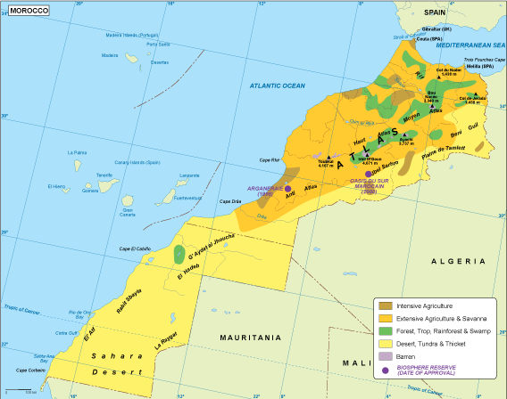

متكامالً الستكشاف واستخراج ليبيا تعتمد بشكل كبير على قطاع النفط الذي يعد الركيزة األساسية لالقتصاد، حيث تمتلك نظا ًما وتكرير النفط، مع مشاركة العديد من شركات النفط العالمية في مشاريع مشتركة. رغم التحديات الطبيعية، يشهد القطاع الزراعي بعض النمو في المناطق التي تتمتع بإمكانية الري، حيث يتم زراعة محاصيل مثل القمح والشعير باإلضافة إلى المحاصيل االقتصادية مثل الزيتون والتمر، كما أن تربية الماشية تعتبر قطا ًعا مهًما. في الصناعة، بجانب قطاع النفط والبتروكيماويات، هناك بعض الصناعات التحويلية مثل إنتاج مواد البناء وتصنيع األغذية لتلبية االحتياجات المحلية. تطور قطاع الخدمات مثل المالية والسياحة أي ًضا، حيث توجد العديد من المؤسسات المالية في مدن مثل طرابلس، وبدأت السياحة في التعافي تدريجًيا، مما يتيح للزوار استكشاف التاريخ والثقافة المحلية. من ناحية الموارد الطبيعية، تتمتع ليبيا باحتياطيات كبيرة من النفط والغاز، وتعد احتياطيات الغاز أي ًضا كبيرة مما يساهم في تطوير قطاع الطاقة، كما أن البالد تحتوي على موارد معدنية مثل الحديد والبauxيت والفوسفات التي تمتلك إمكانيات كبيرة للتطوير. بالنسبة للمياه، تعتمد البالد بشكل أساسي على المياه الجوفية، وتعتبر طبقات المياه الجوفية مثل طبقة المياه النوبّية أساسية للزراعة واالستخدامات اليومية. في مصادر الدخل، يعتمد االقتصاد الليبي بشكل رئيسي على صادرات النفط والغاز، التي تمثل الجزء األكبر من اإليرادات، إلى جانب صادرات المنتجات الزراعية والصناعية مثل زيت الزيتون. كما أن المساعدات الدولية واالستثمارات األجنبية، خاصة في مرحلة ما بعد الحرب، قد ساعدت في دعم االقتصاد الليبي من خالل تمويل مشاريع إعادة اإلعمار والدعم التكنولوجي.